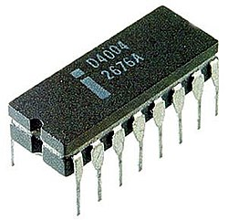

|
|


 |
 |
 |
 |
 |
Inicios del Procesador (1971-1989)
|
|||
1971: El Intel 4004
El 4004 fue el primer microprocesador del mundo, creado en un simple chip y desarrollado por Intel. Era un CPU de 4 bits y también fue el primero disponible comercialmente. Este desarrollo impulsó la calculadora de Busicom e inició el camino para dotar de «inteligencia» a objetos inanimados y asimismo, a la computadora personal.  |
1972: El Intel 8008
Codificado inicialmente como 1201, fue pedido a Intel por Computer Terminal Corporation para usarlo en su terminal programable Datapoint 2200, pero debido a que Intel terminó el proyecto tarde y a que no cumplía con las expectativas de Computer Terminal Corporation, finalmente no fue usado en el Datapoint. .
|
1974: El Intel 8080
EL 8080 se convirtió en la CPU de la primera computadora personal, la Altair 8800 de MITS, según se alega, nombrada así por un destino de la Nave Espacial «Starship» del programa de televisión Viaje a las Estrellas, y el IMSAI 8080, formando la base para las máquinas que ejecutaban el sistema operativo CP/M-80. Los fanáticos de las computadoras podían comprar un equipo Altair por un precio (en aquel momento) de 395 USD.
|
1982: El Intel 80286
El 80286, popularmente conocido como 286, fue el primer procesador de Intel que podría ejecutar todo el software escrito para su predecesor. Esta compatibilidad del software sigue siendo un sello de la familia de microprocesadores de Intel. Luego de seis años de su introducción, había un estimado de 15 millones de PC basadas en el 286, instaladas alrededor del mundo.
|
1985: El Intel 80386
Este procesador Intel, popularmente llamado 386, se integró con 275 000 transistores, más de 100 veces tantos como en el original 4004. El 386 añadió una arquitectura de 32 bits, con capacidad para multitarea y una unidad de traslación de páginas, lo que hizo mucho más sencillo implementar sistemas operativos que usaran memoria virtual.
|
1985: El VAX 78032
El microprocesador VAX 78032 (también conocido como DC333), es de único chip y de 32 bits, y fue desarrollado y fabricado por Digital Equipment Corporation (DEC); instalado en los equipos MicroVAX II, en conjunto con su chip coprocesador de coma flotante separado, el 78132, tenían una potencia cercana al 90 % de la que podía entregar el minicomputador VAX 11/780 que fuera presentado en 1977.
|
1989: El Intel 80486
La generación 486 realmente significó contar con una computadora personal de prestaciones avanzadas, entre ellas, un conjunto de instrucciones optimizado, una unidad de coma flotante o FPU, una unidad de interfaz de bus mejorada y una memoria caché unificada, todo ello integrado en el propio chip del microprocesador. Estas mejoras hicieron que los i486 fueran el doble de rápidos que el par i386-i387 operando a la misma frecuencia de reloj. .
|
1991: El AMD AMx86
Procesadores fabricados por AMD 100 % compatible con los códigos de Intel de ese momento. Llamados «clones» de Intel, llegaron incluso a superar la frecuencia de reloj de los procesadores de Intel y a precios significativamente menores. Aquí se incluyen las series Am286, Am386, Am486 y Am586.
|
El nacimiento de los Intel Pentium (1993-2000)
|
|||
1993: El Intel Pentium
El microprocesador de Pentium poseía una arquitectura capaz de ejecutar dos operaciones a la vez, gracias a sus dos tuberías de datos de 32 bits cada uno, uno equivalente al 486DX(u) y el otro equivalente a 486SX(u). Además, estaba dotado de un bus de datos de 64 bits, y permitía un acceso a memoria de 64 bits (aunque el procesador seguía manteniendo compatibilidad de 32 bits para las operaciones internas, y los registros también eran de 32 bits)
|
1995: EL Intel Pentium Pro
Lanzado al mercado en otoño de 1995, el procesador Pentium Pro (profesional) se diseñó con una arquitectura de 32 bits. Se usó en servidores y los programas y aplicaciones para estaciones de trabajo (de redes) impulsaron rápidamente su integración en las computadoras. El rendimiento del código de 32 bits era excelente, pero el Pentium Pro a menudo era más lento que un Pentium cuando ejecutaba código o sistemas operativos de 16 bits.
|
1997: El Intel Pentium II
Un procesador de 7'5 millones de transistores, se busca entre los cambios fundamentales con respecto a su predecesor, mejorar el rendimiento en la ejecución de código de 16 bits, añadir el conjunto de instrucciones MMX y eliminar la memoria caché de segundo nivel del núcleo del procesador, colocándola en una tarjeta de circuito impreso junto a este.
|
Los procesadores Pentium II Xeon se diseñan para cumplir con los requisitos de rendimiento en computadoras de medio-rango, servidores más potentes y estaciones de trabajo (workstations). Consistente con la estrategia de Intel para diseñar productos de procesadores con el objetivo de llenar segmentos de los mercados específicos, el procesador Pentium II Xeon ofrece innovaciones técnicas diseñadas para las estaciones de trabajo y servidores que utilizan aplicaciones comerciales exigentes
|
1999: El Intel Celeron
Continuando la estrategia, Intel, en el desarrollo de procesadores para el segmento de mercados específicos, el procesador Celeron es el nombre que lleva la línea de bajo costo de Intel. El objetivo fue poder, mediante esta segunda marca, penetrar en los mercados impedidos a los Pentium, de mayor rendimiento y precio. Se diseña para añadir valor al segmento del mercado de los PC. Proporcionó a los consumidores una gran actuación a un bajo coste, y entregó un rendimiento destacado para usos como juegos y el software educativo.
|
1999: El Intel Pentium III
El procesador Pentium III ofrece 70 nuevas instrucciones Internet Streaming, las extensiones de SIMD que refuerzan dramáticamente el rendimiento con imágenes avanzadas, 3D, añadiendo una mejor calidad de audio, video y rendimiento en aplicaciones de reconocimiento de voz. Fue diseñado para reforzar el área del rendimiento en el Internet, le permite a los usuarios hacer cosas, tales como, navegar a través de páginas pesadas
|
El procesador Pentium III Xeon amplía las fortalezas de Intel en cuanto a las estaciones de trabajo (workstation) y segmentos de mercado de servidores, y añade una actuación mejorada en las aplicaciones del comercio electrónico e informática comercial avanzada. Los procesadores incorporan mejoras que refuerzan el procesamiento multimedia, particularmente las aplicaciones de vídeo.
|
2000: EL Intel Pentium 4
Este es un microprocesador de séptima generación basado en la arquitectura x86 y fabricado por Intel. Es el primero con un diseño completamente nuevo desde el Pentium Pro. Se estrenó la arquitectura NetBurst, la cual no daba mejoras considerables respecto a la anterior P6. Intel sacrificó el rendimiento de cada ciclo para obtener a cambio mayor cantidad de ciclos por segundo y una mejora en las instrucciones SSE.
|
La ultima evolucion de procesadores hasta la actualidad (2001-2021)
|
|||
2001: El AMD Athlon XP
Cuando Intel sacó el Pentium 4 a 1,7 GHz en abril de 2001 se vio que el Athlon Thunderbird no estaba a su nivel. Además no era práctico para el overclocking, entonces para seguir estando a la cabeza en cuanto a rendimiento de los procesadores x86, AMD tuvo que diseñar un nuevo núcleo, y sacó el Athlon XP. Este compatibilizaba las instrucciones SSE y las 3DNow
|
2004: El AMD Athlon 64
El AMD Athlon 64 es un microprocesador x86 de octava generación que implementa el conjunto de instrucciones AMD64, que fueron introducidas con el procesador Opteron. El Athlon 64 presenta un controlador de memoria en el propio circuito integrado del microprocesador y otras mejoras de arquitectura que le dan un mejor rendimiento que los anteriores Athlon y que el Athlon XP funcionando a la misma velocidad, incluso ejecutando código heredado de 32 bits
|
2006: El Intel Core Duo
Intel lanzó esta gama de procesadores de doble núcleo y CPUs 2x2 MCM (módulo Multi-Chip) de cuatro núcleos con el conjunto de instrucciones x86-64, basado en la nueva arquitectura Core de Intel. La microarquitectura Core regresó a velocidades de CPU bajas y mejoró el uso del procesador de ambos ciclos de velocidad y energía comparados con anteriores NetBurst de los CPU Pentium 4/D2
|
2011: El AMD Fusion
AMD Fusion es el nombre clave para los microprocesadores Turion, producto de la fusión entre AMD y ATI, se combinan el proceso de la geometría 3D y otras funciones de GPUs actuales. La GPU está integrada en el propio microprocesador. Los primeros modelos salieron entre los últimos meses de 2010 y primeros de 2011 denominados Ontaro y Zacate (bajo consumo), Llano, Brazos y Bulldozer (gamas media y alta) salieron entre mediados y finales del 2011.
|
2012: El Intel Core Ivy Bridge
Ivy Bridge es el nombre en clave de los procesadores conocidos como Intel Core de tercera generación. Son por tanto sucesores de los micros que aparecieron a principios de 2011, cuyo nombre en clave es Sandy Bridge. Pasamos de los 32 nanómetros de ancho de transistor en Sandy Bridge a los 22 de Ivy Bridge. Esto le permite meter el doble de ellos en la misma área. Un mayor número de transistores significa que puedes poner más bloques funcionales dentro del chip
|
2013: El Intel Core Haswell
Haswell es el nombre clave de los procesadores de cuarta generación de Intel Core. Son la corrección de errores de la tercera generación e implementan nuevas tecnologías gráficas para el gamming y el diseño gráfico, funcionando con un menor consumo y teniendo un mejor rendimiento a un buen precio. Continua como su predecesor en 22 nanómetros pero funciona con un nuevo socket con clave 1150.
|
2017: El Intel Core i7-7920HQ
Este procesador está en la línea de la séptima generación, incorporando una potencia y una capacidad de respuesta nunca antes vistas. Especialmente fabricado para usuarios exigentes que quieren aumentar su productividad, sin dejar de lado a aquellos que pretenden pensar también en el entretenimiento y juegos sensacionales, con alta transferencia de datos y mucho más, ya está disponible en el mercado.
|
2021: Intel Core de 11ª Generación
Estos procesadores cuentan con los nuevos transistores SuperFin, combinan nuevas tecnologías como WiFi 6, Thunderbolt 4, decodificación de medios AV1, interfaz PCI Express Gen 4 anexada al procesador y características de seguridad reforzadas por hardware. Admite velocidades de hasta 4.8 Ghz e Intel Optane H10 con almacenamiento en estado sólido para las unidades más veloces.
|


 !
! 


Si quieres conocer mas de nosotros entra a nuestras siguientes redes sociales:
|
Copyright © 2020-2021 Evolucion de las Computadoras. Todos los derechos reservados |
 |